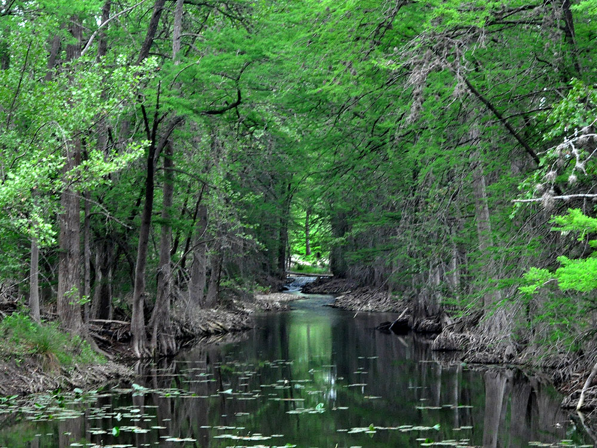
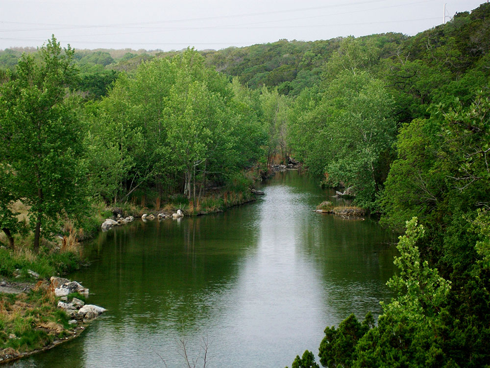
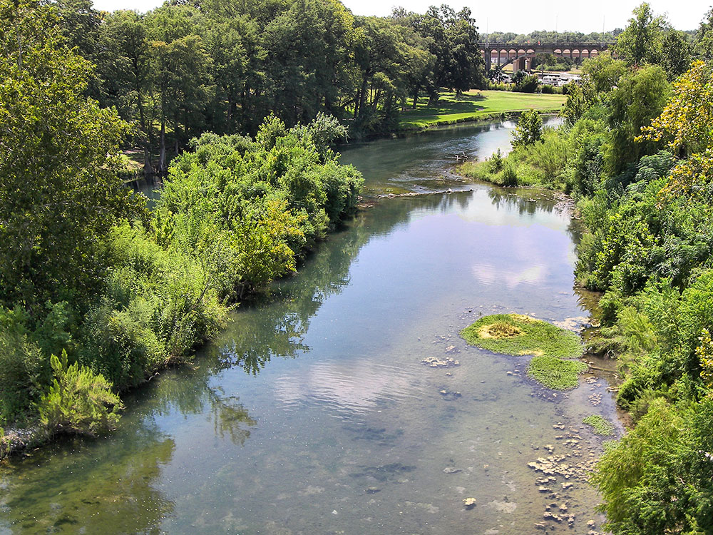
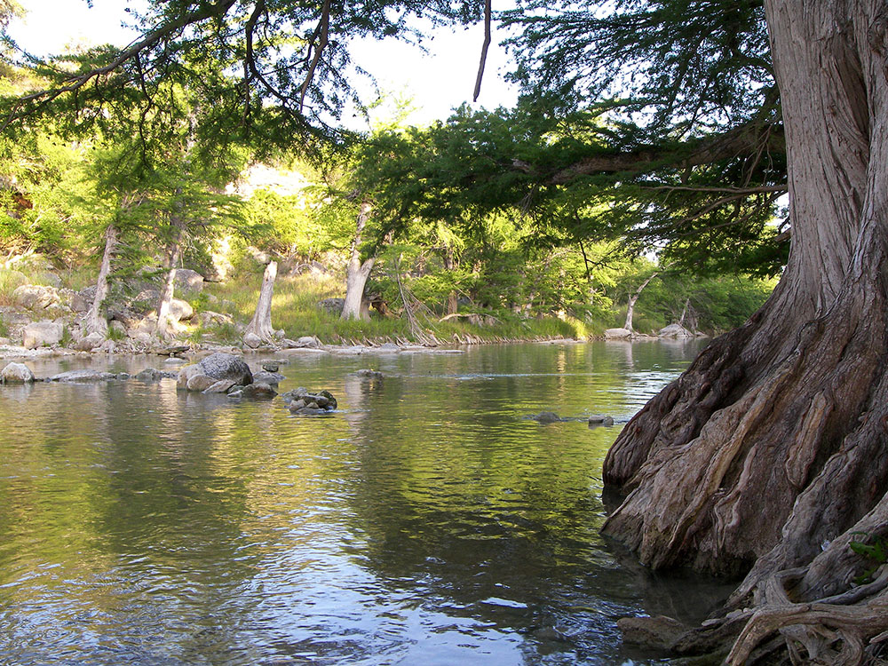
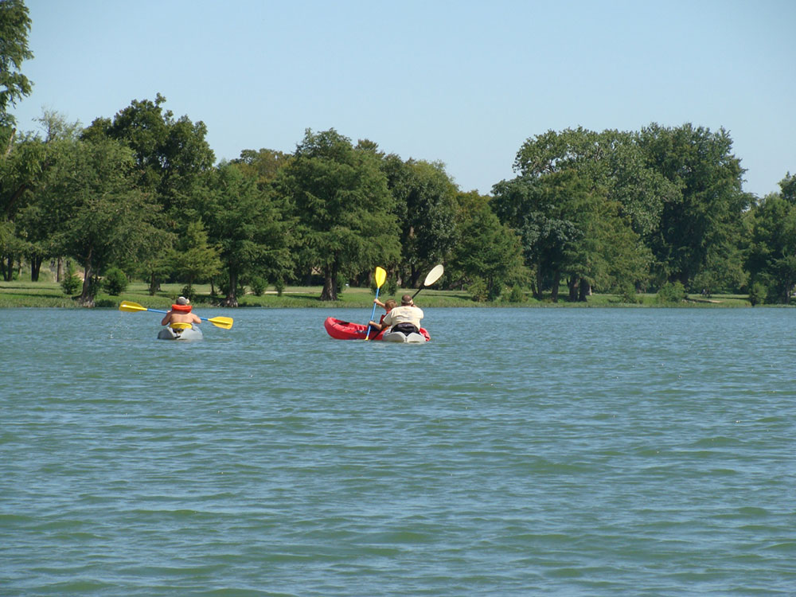
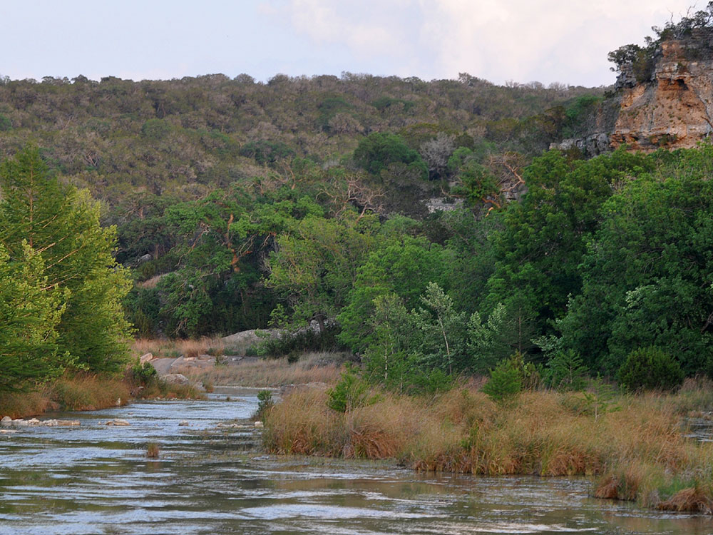

Texas state park located on a section of the Guadalupe River with four miles of river frontage for canoeing, fishing, swimming and tubing
General Information
Children 12 and under: Free
How to Get There
From Boerne (12 mi): Take TX-46 East for approximately 9 miles, then turn left onto Park Road 31 and continue about 3 miles north to the park entrance.
Overview
Guadalupe River State Park is a Texas state park, managed by Texas Parks and Wildlife, that protects four miles of the spring-fed Guadalupe River in the Texas Hill Country, northwest of Bulverde between Boerne and New Braunfels. Limestone bluffs and bald cypress groves frame clear, cool water, and the park was set aside to give the public access to one of the region's best-loved stretches of river and to protect the surrounding riparian and woodland habitat. Today it is one of the most popular spots in the area for swimming, tubing, paddling, and fishing, alongside miles of hiking and equestrian trails. A guided interpretive tour into the adjacent Honey Creek State Natural Area is also available for visitors who want a closer look at the surrounding landscape.
Access
The park lies along Park Road 31, which branches off TX-46 between Boerne and Bulverde, north of San Antonio and within easy reach of Austin. Nearly all visitors arrive by car, and there is no public transportation to the park. Because it is close to major cities, the park is busy on summer weekends and holidays and can reach capacity, so check current Texas Parks and Wildlife reservation and entry policies before you go. Parking at the river access areas fills early on warm days.
Seasons
Summer is the busiest season, when the cool river draws swimmers and tubers, but days are hot and humid and visitors should bring water and sun protection. Spring brings wildflowers, comfortable hiking weather, and active birdlife, while fall offers mild temperatures and a quieter river; bald cypress trees take on a rusty color in late fall. Winters are generally mild with occasional freezing nights, and the trails are uncrowded. River levels and flow change with rainfall, and heavy rain upstream can make the river rise quickly, so watch for posted warnings and closures of swimming and paddling areas.
Things to Do
Float the Guadalupe River
Bring a tube and enjoy one of Texas' favorite outdoor traditions while floating the clear, spring-fed waters of the Guadalupe River.
Swim in the River
Cool off in designated swimming areas along four miles of river frontage surrounded by limestone bluffs and towering bald cypress trees.
Paddle the Guadalupe
Explore the river by canoe or kayak and experience scenic stretches of water, gentle rapids, and peaceful Hill Country landscapes.
Hike More Than 13 Miles of Trails
Discover a network of trails that pass through forests, grasslands, river corridors, and scenic overlooks throughout the park.
Visit the Discovery Center
Learn about the area's ecology and wildlife through exhibits, hands-on displays, magnifying stations, and educational resources.
Explore the Bauer Unit
Venture into a more remote section of the park featuring challenging trails, native prairies, spring seeps, and excellent wildlife viewing opportunities.
Top Trails
Painted Bunting Trail
Distance: 2.86 miles
Difficulty: Easy to Moderate
Highlights: Native grasslands, birdwatching opportunities, and scenic Hill Country landscapes.
River Overlook Trail
Distance: 0.3 miles
Difficulty: Easy
Highlights: Quick access to a scenic overlook with views of the Guadalupe River.
Bald Cypress Trail
Distance: 1.6 miles
Difficulty: Easy
Highlights: Beautiful river scenery, bald cypress trees, swimming areas, and fishing spots.
Prairie, Painted Bunting, Barred Owl & Live Oak Loop
Distance: 5.1 miles
Difficulty: Easy
Highlights: Open meadows, oak woodlands, wildlife viewing, and diverse ecosystems.
Bauer Unit Loop
Distance: 7.6 miles
Difficulty: Moderate
Highlights: Scenic overlooks, remote terrain, native prairie habitat, and panoramic views.
Bald cypress, sycamore, pecan, live oak, ashe juniper, and mesquite line the river and surrounding hills. White-tailed deer, raccoons, armadillos, and skunks are common, and the park's ashe juniper woodlands provide nesting habitat for the endangered golden-cheeked warbler, making it a rewarding stop for birdwatchers.
Visitor Centers
The park headquarters near the entrance is the place to pay fees, ask rangers about trail and river conditions, and pick up maps. The park's Discovery Center, listed in the Things to Do section, offers exhibits and hands-on displays about the area's ecology and wildlife. Guided tours into Honey Creek State Natural Area start from the park, and staff can explain how to join one.
Camping and Lodging
The park offers campsites for tents and RVs, along with more primitive walk-in sites, and reservations are strongly recommended on weekends and in summer. For hotels and motels, the closest options are in Boerne, about 12 miles away, with more choices in New Braunfels and Canyon Lake to the east and in San Antonio to the south, each within roughly an hour. Spring Branch and Bulverde have smaller inns, cabins, and vacation rentals, and campgrounds and river resorts can also be found around Canyon Lake and New Braunfels.
This article uses material from the Wikipedia articles and official tourism pages for the Guadalupe River State Park, which are released under the Creative Commons Attribution-Share-Alike License 3.0.

_growing_on_the_Guadalupe_River,_Kerr_County,_Texas,_USA_(14_April_2012).jpg){kind=link}







.JPG){kind=link}

.jpg){kind=link}